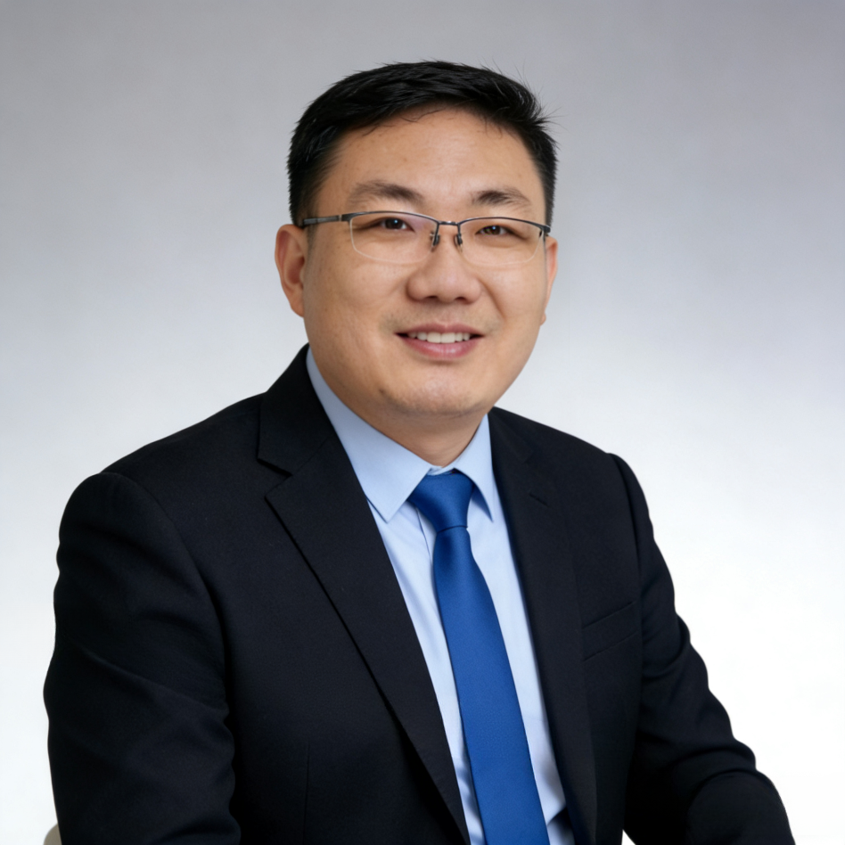

海鑫汇 Global Talent Network（GTN）创始人兼CEO · 中国企业全球化与人才连接实践者

董立鑫是海鑫汇 Global Talent Network（GTN）创始人兼CEO，长期关注中国企业全球化、国际商业连接与未来人才发展。他同时担任 和君咨询合伙人，以及新加坡世贸秘书长兼首席运营官（Secretary-General & COO, WTC Singapore）。拥有德国制造企业、中国互联网及产业数字化领域 20 年实践经验。董立鑫致力于连接人才、产业与全球机会，帮助企业探索国际化路径，并推动新一代人才参与全球化进程。
全球化的本质，不只是企业走向海外。更重要的是：人才如何连接产业，产业如何连接世界，企业如何在全球变化中找到新的增长机会。
董立鑫是海鑫汇 Global Talent Network（GTN）创始人兼CEO。海鑫汇成立于 2024 年，是面向全球青年人才的国际化成长平台，致力于连接全球人才、产业资源与未来机会。通过出海工作坊、和君商学院出海班、海鑫汇出海增长共创营等项目，GTN 探索人才成长、产业发展与全球化之间的新连接方式。
在过去 20 年的职业经历中，董立鑫长期处于不同产业与商业体系的连接点：从德国制造企业的全球运营体系，到中国互联网企业的数字化发展，再到国际商业网络与企业全球化服务。
这些经历让他形成了一个核心判断：企业全球化不仅需要市场机会，更需要——对产业趋势的理解；对商业模式的判断；对国际环境的认知；对人才和资源的连接能力。
因此，海鑫汇 GTN 希望成为连接未来机会的平台：帮助青年人才探索世界，帮助企业连接全球资源，帮助产业寻找新的增长路径。
连接全球人才，共创未来价值。GTN 关注四个维度：
人才 发现并培养具备全球视野的新一代人才。
产业 连接企业需求与产业发展机会。
世界 推动跨区域、跨文化、跨产业交流。
未来 探索人工智能、数字化与全球化带来的新机会。
出海工作坊 · Go Beyond Workshop
面向关注全球化发展的青年人才，通过主题交流、案例研究和实践活动，探索企业全球化与国际商业机会。
和君商学院出海班 · Go Beyond Program
围绕企业全球化战略、海外市场探索与企业家成长，连接企业家资源与国际化实践。
海鑫汇出海增长共创营 · Go Beyond Lab
通过产业研究、企业交流和实践探索，推动企业与人才共同探索全球增长机会。
董立鑫的全球化视角形成于多个产业环境。
德国制造企业：理解长期主义与全球运营
2008 年至 2021 年，董立鑫曾长期参与德国制造企业 Roto Frank（诺托）的中国业务发展，最高担任 Branch General Manager。这一阶段，他深入理解德国制造企业运营体系、工业企业长期发展逻辑、跨文化组织协作与全球化企业经营方法。德国制造经验成为其理解产业全球化的重要基础。
京东：理解数字商业与供应链效率
在京东集团工作期间，董立鑫参与中国领先互联网商业体系的发展，关注数字商业模式、平台化运营、供应链效率与企业增长逻辑。互联网时代的实践，让他进一步理解技术如何改变产业连接方式。
贝壳找房：探索产业数字化与 AI 应用
在贝壳找房期间，董立鑫参与产业数字化相关实践，关注 AI 技术应用、数据驱动运营、传统产业数字化升级。这段经历强化了他对于"产业能力 + 数字技术"推动企业未来发展的理解。
中国企业全球化
关注中国企业进入国际市场过程中的关键决策：市场选择、商业模式设计、海外运营路径、国际资源连接。
AI 与未来商业
关注人工智能如何改变企业运营方式、商业增长模式与人才能力结构。
国际人才与产业连接
通过 GTN 平台，探索人才、产业和全球机会之间的新型连接模式。
海鑫汇 Global Talent Network（GTN） 创始人兼CEO
和君咨询 合伙人
新加坡世贸（WTC Singapore） 秘书长兼首席运营（Secretary-General & COO）
对外经贸大学阿波罗投资俱乐部 出海发展专委会 执行秘书长
对外经济贸易大学 校外实践导师
赣州国际商会 出海顾问
以下公开信息来自高校、国际组织及行业机构：
世界贸易中心协会（WTCA）
董立鑫被任命为新加坡世贸秘书长兼首席运营官（Secretary-General & COO, WTC Singapore）。
来源：wtca.cn →
上海市杨浦区人民政府（英文门户 English Yangpu）
报道董立鑫以对外经贸大学阿波罗投资俱乐部出海专委会执行秘书长身份，出席 CIFTIS 2025（中国国际服务贸易交易会）杨浦分论坛，探讨中国企业出海。
来源：english.shyp.gov.cn →
对外经济贸易大学深圳研究院
报道董立鑫组织深圳跨境电商研讨会，并介绍其作为海鑫汇创始人的相关信息。
来源：szyjy.uibe.edu.cn →
对外经济贸易大学政府管理学院
报道董立鑫作为校友分享职业经历，包括德国制造企业、京东、贝壳及和君相关经历。
来源：schpa.uibe.edu.cn →
对外经济贸易大学国际学院
董立鑫参与"AI 驱动的连接者"等主题分享，并获聘校外实践导师。
来源：sie.uibe.edu.cn →
来源：sie.uibe.edu.cn →
海鑫汇发起并承办的出海年会（和君小镇）
董立鑫 / 海鑫汇 GTN 发起并承办"和君小镇出海峰会"，是在和君小镇举办、面向中国企业出海的年度旗舰活动：
· 第一届（2024）：海鑫汇第一届年会 · 首届和君小镇出海峰会 —— 来源：10100.com →
· 第二届（2025）：海鑫汇第二届年会 · 第二届和君小镇中国企业出海交流会 —— 来源：hejun.com →
如果您正在探索：企业全球化路径、海外市场机会、国际人才合作、AI 时代商业增长——欢迎与海鑫汇 GTN 建立连接。
预约出海决策沟通：/readiness-check/ →